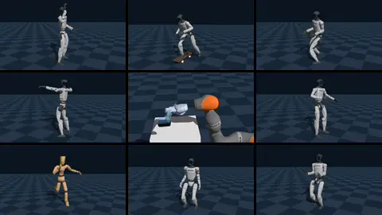

The Policy Zoo¶
Eden ships published controllers that run as released, with no training: humanoid locomotion and motion tracking,
skateboarding, dexterous tool use, insertion, and clients for server-hosted vision-language-action models. This page
lists every policy in eden/extensions/policies/, what each one needs to run, and how eden inference --policy
builds its world.

Run a policy¶
eden inference --policy sonic --motion_file examples/projects/mimic/beyondmimic/sample/G1_gangnam_style_V01_bvh_60hz.npz --vis
eden inference --policy holosoma --base_command 0.5 0.0 0.0 --vis # walk forward at 0.5 m/s
eden inference --policy beyondmimic_moves --clip_name B_DadDance --vis
eden inference --policy husky --rec # record an mp4
Weights download on first use from the policy's Hugging Face dataset into the asset cache (policies/ under
EDEN_ASSETS_DIR, by default ~/.cache/eden/assets), and are checked against the MD5 the policy pins. Policies with ONNX
weights need the onnx extra: pip install 'eden-world[onnx]', or uv sync --inexact --extra onnx in a checkout.
--policy accepts the package name (holosoma), the registry key (holosoma_locomotion_policy), or the key without
its _policy suffix. The flags that matter for a policy run:
| Flag | What it does |
|---|---|
--policy NAME |
The policy to roll out. Mutually exclusive with --checkpoint. |
--task TASK |
Run the policy on a task's env instead of the policy's own world (below). Optional. |
--robot NAME |
The eden.robots class for a task-less run of a policy that does not pin its own robot (default G1Dofs29). Ignored when the policy pins one, and with --task. |
--entity_name NAME |
The scene entity the policy controls (default robot). |
--motion_file PATH |
The reference motion for a motion-tracking policy. Required when the policy takes one. |
--clip_name CLIP |
The clip for a per-clip policy (beyondmimic_moves); ignored by the others. |
--base_command VX VY WZ |
A constant command for a command-driven policy (default: stand). Padded or truncated to the policy's command width. |
--steps N |
Steps to run (default 1000). --episodes is not available with --policy. |
--num_envs N |
Parallel envs, with --task only: a task-less run builds one env. |
--vis, --rec, --async, --cpu |
As for a checkpoint replay (Training Runs). |
Task-less runs and --task runs¶
Without --task, Eden builds the policy's own world from its spec: one env, an empty scene holding the robot
robot_options() returns plus every entity scene_entity_options() declares (the skateboard, the tool and its table),
the policy's env_options() (its control rate and solver settings), and its observation, action and command terms.
This is the run the policy was ported for, and the one to start with.
With --task, the policy runs on that task's env, and the policy's command terms are merged into the task's. The
task must provide what the policy reads: the entities (checked at construction), and, for a policy that reads the
env's observations, the exact observation group it was built for. A policy that observes its command through the
task's own command terms ignores --base_command, and passing a non-zero one is an error.
The shipped policies¶
Humanoid locomotion¶
--policy |
What it is | Robot | Needs | Control |
|---|---|---|---|---|
holosoma |
Holosoma velocity-tracking locomotion (ONNX); also the safety base eden deploy preloads on a G1 |
G1Dofs29 at Holosoma's default pose |
--base_command VX VY WZ; onnx extra |
50 Hz |
homie |
OpenHomie walk/stand tracker for the lower body (walk and stand torch checkpoints) | G1Dofs29 with HOMIE's pose and gains |
--base_command: a 4-D [vx, vy, wz, height_delta] command, padded with zeros |
50 Hz |
amo |
AMO adaptive whole-body control (TorchScript) | G1Dofs29NoWristDof (23 DOF) |
Nothing: its command term resamples its own commands | 50 Hz |
husky |
HUSKY humanoid skateboarding (ONNX) | HuskyG1 (23 DOF) plus a skateboard |
--base_command: a 2-D [lin_vel_x, relative_heading]; onnx extra |
50 Hz |
limx_oli_loco |
Velocity-tracking loco/stand controller for LimX Oli (rsl_rl actor) | Oli |
No released weights: a local velocity_tracking_flat checkpoint trained for Oli (see Local checkpoints) |
the env default |
Humanoid motion tracking¶
These track a reference motion. Each takes --motion_file (an Eden motion .npz, see
Motion Tracking) except where noted.
--policy |
What it is | Robot | Needs | Control |
|---|---|---|---|---|
sonic |
GEAR-SONIC universal-token whole-body controller (encoder + decoder ONNX) | G1Dofs29 at SONIC's standing pose |
--motion_file; onnx extra |
50 Hz |
twist2 |
TWIST2 whole-body tracker (ONNX) | G1Dofs29, knees bent |
--motion_file; onnx extra |
50 Hz |
humanoid_gpt |
Humanoid-GPT tracker, Transformer by default or MLP (ONNX) | --robot (default G1Dofs29) |
--motion_file (a 50 Hz motion); onnx extra |
50 Hz |
protomotionv3 |
ProtoMotions v3 g1-bones-deploy tracker (torch actor from the training checkpoint) |
G1Dofs29 |
--motion_file |
50 Hz |
omnixtreme |
OmniXtreme flow-matching base policy plus residual correction (three ONNX graphs) | OmniXtreme_G1 |
--motion_file; onnx extra |
50 Hz |
gmt |
GMT general motion tracking (TorchScript) | G1Dofs29NoWristDof (23 DOF) |
--motion_file: GMT's own .pkl format (samples in examples/policies/gmt/motions/) |
50 Hz |
beyondmimic_moves |
60 BeyondMimic tracking policies from the exptech/g1-moves dataset, one per clip |
G1Dofs29 at the g1-moves pose |
--clip_name (default B_DadDance); the clip's checkpoint and motion download on first use |
50 Hz |
metamotivo |
Meta Motivo (FB-CPR) behavior foundation model for an SMPL humanoid; behavior set by a context vector z |
SmplHumanoid |
The metamotivo package (pip install "metamotivo[huggingface]@git+https://github.com/facebookresearch/metamotivo.git"); the model loads from Hugging Face (facebook/metamotivo-S-1 by default) |
30 Hz |
The sample motion examples/projects/mimic/beyondmimic/sample/G1_gangnam_style_V01_bvh_60hz.npz is what the
sonic, humanoid_gpt and omnixtreme examples default to; examples/policies/twist2/resources/greeting.npz is
TWIST2's.
Manipulation¶
--policy |
What it is | Robot | Needs | Control |
|---|---|---|---|---|
simtoolreal |
SimToolReal object-centric tool manipulation (rl_games LSTM actor reimplemented in torch) | KukaSharpa (KUKA iiwa14 arm + SharPa hand, 29 DOF) plus a table, a DexToolBench tool and a goal ghost |
Nothing extra; the tool defaults to long_screwdriver |
60 Hz |
omnireset |
UWLab OmniReset state-based insertion expert | OmniResetUR5e2f85 (UR5e + Robotiq 2F-85) plus the object pair |
The peg pair is the one released expert |
10 Hz |
Server-backed clients (VLAs and world models)¶
These policies run inference on a separate server and only exchange observations and actions with it. They need
the policy-client extra (pip install 'eden-world[policy-client]'), a running server, and a manipulation scene with
the cameras their setup reads; see Remote Policy Clients.
--policy |
Server | Transport | Default address | Setups (policy_setup) |
|---|---|---|---|---|
pi |
OpenPI (pi0, pi0-FAST, pi0.5) | openpi_websocket |
localhost:8000 |
widowx_bridge (default), google_robot, libero, droid, droid_jointpos, aloha |
gr00t |
NVIDIA Isaac-GR00T | zmq_msgpack |
localhost:5555 |
simpler_env_widowx (default), libero_sim, oxe_droid_relative_eef_relative_joint |
galaxeavla |
GalaxeaVLA (G0.5) | galaxea_websocket |
localhost:8765 |
galaxea_r1lite (default), galaxea_r1pro, droid_franka |
cosmos3 |
Cosmos3-Nano-Policy-DROID (world action model) | openpi_websocket |
localhost:8000 |
DROID only |
molmoact2 |
MolmoAct2 DROID server (absolute joint control) | http_json_numpy |
localhost:8000 |
DROID only |
octo |
Octo, through an HTTP server | http_json |
localhost:9010 |
WidowX only |
eden inference --policy <client> constructs the client with its defaults (the address, setup and no instruction
above), so to choose a server, a setup or a language instruction, drive the client from Python as
Remote Policy Clients shows.
Local checkpoints¶
Every policy's file locations are class constants, not options. To run your own weights in place of the released
ones, call use_local_checkpoint on the class before constructing it; it also clears the MD5 pinned to the released
file, which your file would fail:
from eden.extensions.policies.limx_oli_loco.policy import OliVelocityLocoPolicy
OliVelocityLocoPolicy.use_local_checkpoint("logs/velocity_tracking_flat/<run>/model_3000.pt")
A policy that loads several files names the one to redirect: SonicPolicy.use_local_checkpoint(path,
checkpoint_attr="decoder_checkpoint_path"). On the command line, eden deploy --policy NAME --policy_checkpoint
NAME=PATH does the same for a deployment.
To fetch every policy's files from a mirror (an offline cluster, a shared read-only cache), export
EDEN_ASSETS_DIR=/data/mirror: policies then cache under /data/mirror/policies/.
Policies on hardware and in MuJoCo¶
eden deploy --policy NAME loads any of these as a switchable slot on a real robot or, with --mujoco, in MuJoCo.
On a G1, Holosoma is preloaded as the safety base slot. Which policies can share one deployment, and how slots switch,
is in Deployment. examples/policies/policy_switch/main.py shows the sim-side
counterpart: Holosoma and SONIC hot-swapping on one G1.
Example scripts¶
Most policies also have a standalone script under examples/policies/<name>/main.py that builds the same world and
adds policy-specific controls (a keyboard command, a clip picker, recording): amo, beyondmimic_moves, gmt,
holosoma, homie, humanoid_gpt, husky, metamotivo, omnireset, omnixtreme, protomotionv3, simtoolreal,
sonic and twist2. Each script's header gives the command to run it.
See also¶
- Adding a Policy to the Zoo: write your own
- API: eden.extensions.policies
- Porting a Pretrained Policy: reproduce a policy from another stack faithfully
- Remote Policy Clients: VLA servers, transports, action chunking
- Deployment: running these on a robot